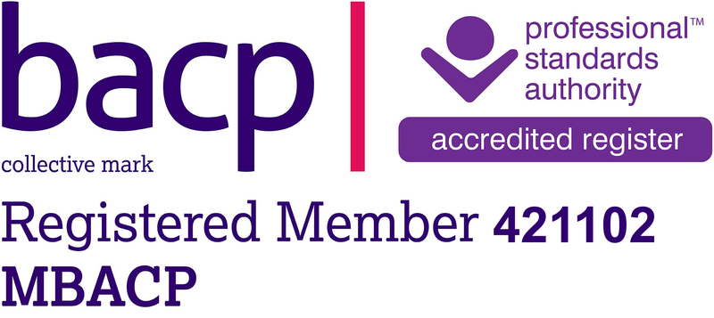

About me
I’m a qualified psychotherapist, with a master’s degree in Psychotherapy and Counselling from Regent’s University London.
I have experience working with clients seeking therapy for a wide range of issues. Outside of my private practice, I also work for the charity One in Four, providing therapy to adult survivors of childhood abuse.
My training has been pluralistic, drawing on psychodynamic, humanistic and existential traditions. I don’t believe any one model of therapy will work for everyone. The approaches that exist are just that: models.
I believe the most important building block of useful therapy is a safe and trusted relationship between therapist and client. My aim is to work together with you to understand you and your life as you see and feel it in the present moment.
I’m a registered member of BACP, and currently a trainee member of UKCP, working towards a Postgraduate Certificate and full accreditation.
Before training as a therapist, I worked for many years in the corporate sector and then in charity leadership. This has given me a vivid understanding of the deep purpose and belonging that can come from our careers, as well as how challenging it can be to work in high-pressure environments.
My pronouns are she/her.
